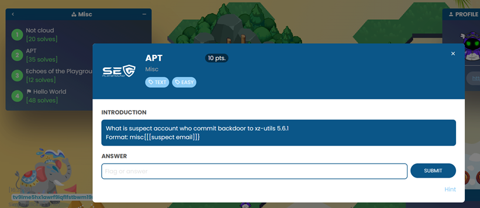
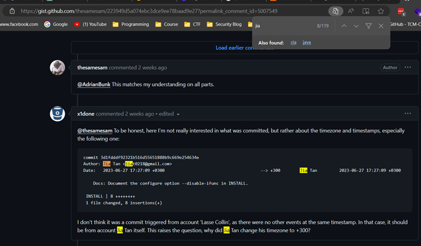
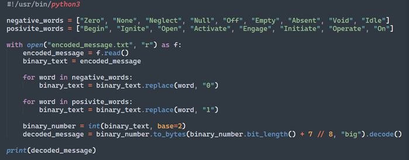

Challenges Index
Challenge 1: [Not cloud] [Easy]
Something is gonna be easy when you just try to view it
Solution
1. โจทย์
2. เมื่อเข้าไปตาม Link จะปรากฏ หน้า Web site ดังรูป
3. จากการสังเกต Path ข้างต้น จึงทดสอบเข้าไปที่ Path /cyberspkash2024/ แทน จึงได้ข้อมูลดังรูป ซึ่งมี Path ที่น่าสนใจ คือ not-cloud/soooooooooooocloud
4. เข้าไปตาม Path ดังกล่าว จะได้ไฟล์ออกมา
5. เปิดไฟล์ด้วย Notepad จะได้คำตอบ (Flag)
Challenge 2: [APT] [Easy]
What is suspect account who commit backdoor to xz-utils 5.6.1
Solution
1. โจทย์
2. ตามคำถาม จึงไปหาข้อมูล จะได้เมลผู้ต้องสงสัยที่ Commit code backdoor to xz-utils 5.6.1 คือ jiat0218@gmail.com
4. จะได้คำตอบ (Flag) ออกมา misc{jiat0218@gmail.com}
Challenge 3: [Echoes of the Plyground] [Easy]
In the image there is a flag.txt. In the file there is a flag answer inside. Can you find it?
Solution
1. โจทย์
2. Keyword ที่สำคัญในคำอธิบายคือ "message encoded in linguistic binary" เลยเดาว่า message น่าจะเป็น binary encoded (0, 1)
3. เมื่อลองพิจารณาแต่ละคำใน encoded message จะเห็นว่าเป็นคำที่มีความหมายเชิงบวก (Begin, Ignite, ...) ผสมกับคำที่มีความหมายเชิงลบ (Zero, None, ...)
4. ลองเขียนโค้ด Python เพื่อแปลงแต่ละคำเป็นตัวเลข 0 และ 1
5. ลองรันดู จะได้ binary string ออกมา
6. เอาไปใส่ใน CyberChef จะได้ flag ออกมา
7. หรือมาแก้โค้ด solve.py เพิ่ม เพื่อให้รันแล้วได้ flag ออกมาตรงๆ
8. ผลลัพธ์
Challenge 4: [Hello World] [Easy]
In the image there is a flag.txt. In the file there is a flag answer inside. Can you find it?
Solution
1. โจทย์
2. Download หรือเปิดไฟล์จะได้ base64 มา
3. เอาไปใส่ใน CyberChef ทำการ decode จะได้คำตอบ (flag) ออกมา